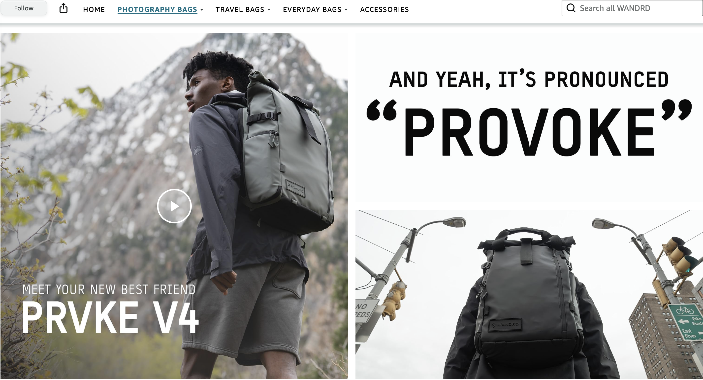

WANDRD designs versatile travel gear and camera bags for creatives. This project focused on structuring their comprehensive Amazon Brand Store into an intuitive, high-conversion visual ecosystem.
Amazon's rigid layout modules often dilute distinctive brand identities. The goal was to overcome these grid limitations through custom lifestyle tiles, bold typographic callouts, and tailored infographics that feel authentic to WANDRD.

Home Page
The storefront landing, leading with product category tiles to direct users quickly toward their area of interest.

Product Page — The PRVKE
The PRVKE page pairs lifestyle imagery with bold callouts, reinforcing the product personality.

Product Page — The Fernweh
The layout presents the travel bag line with a storytelling approach — place, mood, and product together.

Designed
For
Amazon
The brand store operates within Amazon's tightly constrained template system. Every layout decision had to work within those boundaries while still feeling distinctly WANDRD.